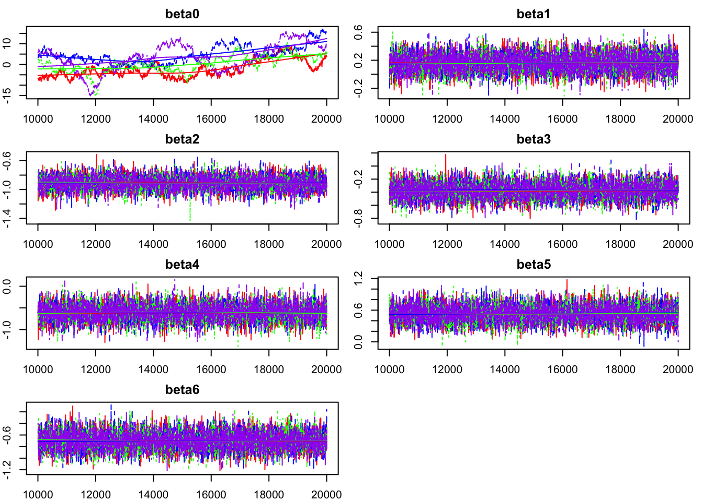
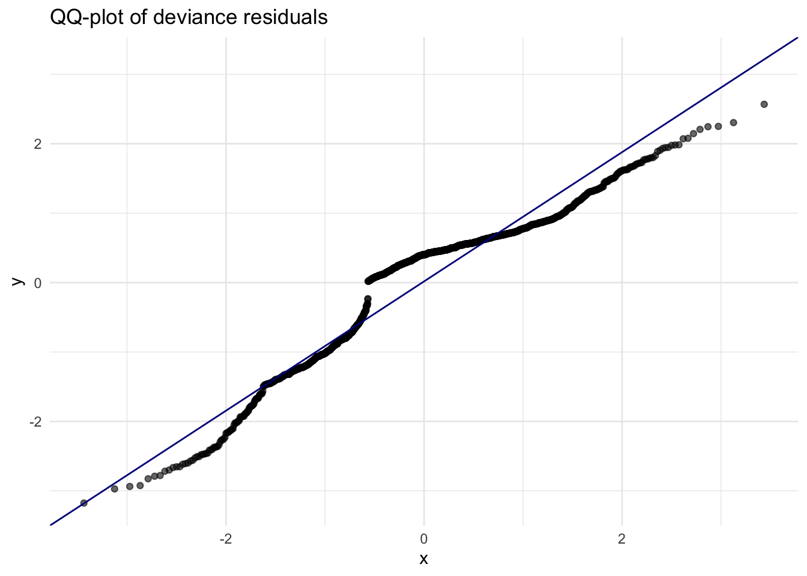

Factors that Influence Clinical Outcomes After Ischemic Stroke
Background:
Stroke is a leading cause of death and a big cause of chronic disability in the United States, and because it is commonly painless, patients can lack the recognition of the symptoms. Therefore, we are tasked with seeing how to accelerate the process of acute stroke care delivery by reducing the time needed to make treatment decisions and providing reperfusion interventions with either thrombolytic (TPA) or mechanical thrombectomy, or both. The program included promoting education in the community and clinical training for EMS providers. The study was conducted over 2019-2020 on a quarterly basis, where the first two quarters included program planning (baseline), the next four quarters included the implementation of the program, and the last two quarters represented a period of full implementation.
Research Question:
Is there evidence that outcomes improved (measured by if patients were discharged to their home or a rehabilitation facility as opposed to other outcomes) over the course of the study, from baseline to end–of–study?”
Data:
Missing Data:
Five variables were missing information from this data set. The outcome variable, homeOrRehab, was missing 3% of observations. Because outcome missingness complicates interpretation and cannot be reliably imputed under our study design, these observations were excluded from the analysis. The remaining missingness occurred in four covariates: Age, PreHospNotify (whether EMS notified the hospital prior to arrival), EMSVsCar (mode of arrival), and Race2. Missingness was not uniformly distributed. Age had the highest proportion of missing observations at 47%, followed by PreHospNotify (12%), EMSVsCar (5%), and Race2 (4%).
When examining for patterns in missing data, it was noticed that Age was completely missing from observations taken at sites with IDs 170, 150, and 140. This strongly suggests site-level data collection issues rather than patient-level characteristics driving missingness. Furthermore, PreHospNotify and EMSvsCar were most highly correlated for missing data at 0.36, while least correlated were Race and PreHospNotify.
EDA:
Our EDA focused on understanding how treatment type, complications, and demographic factors relate to the likelihood of a favorable outcome (defined as discharge to home or rehabilitation). At baseline (control phase), patients who received thrombectomy only had the lowest proportion of favorable outcomes. Patients treated with TPA only or both procedures had higher and relatively similar home/rehab rates.
After full implementation of the intervention program, outcomes improved for all groups, but the relative ordering persisted. TPA-only patients continued to have the best outcomes, while thrombectomy-only patients still had the poorest outcomes, though their performance improved compared to baseline. Interestingly, patients who received both procedures performed moderately well but not as well as patients receiving TPA alone, and slightly worse than the same group earlier in the study.
Across all operation types, absence of complications was strongly associated with better outcomes. In contrast, any complication TPA-related, thrombectomy-related, or both, substantially reduced the likelihood of discharge to home or rehab. Finally, one patient was observed to have received both procedures, and complications occurred for both. This individual was not discharged to home or rehab.
Frequentist Model:
For our frequentist model, we used Multiple Imputation by Chained Equations (MICE), which is a statistical method for dealing with missing data by creating multiple complete datasets instead of just one. For the model, the predictor variables included demographic factors (Age, Gender, Race), clinical treatment indicators (hadTPA, hadThrombectomy), complication variables (tpaComplic, thrComplic), and information about the study quarter (Time2). We also included siteID to account for differences across the sites. PreHospNotify (whether EMS alerted the hospital before arrival) and EMSvsCar were also included as variables. The outcome variable we used is homeOrRehab, which helps us see if the patient had a positive outcome of either going home or enrolling in rehabilitation services depending on the predictor variable factors.
In order to account for the variables with the most missing data, we started by fitting a linear regression model predicting Age from the available demographic and clinical predictors. For the rows with missing Age, the model predicts the most reasonable values and fills in the missing entries. To add on, a linear regression model makes sense here because Age is a continuous variable. Next, we imputed PreHospNotify using a logistic regression model since this is a binary variable. The model estimated the probability that PreHospNotify = 1 for each case with missing data, and then we used draws from Bernoulli to generate the imputed values. This method makes sure to include realistic binary variation and preserve uncertainty compared to deterministically rounding probabilities. We followed the same method for EMSvsCar, which is also a binary predictor. We fit a logistic regression using all of the available predictors, calculated predicted probabilities for the missing cases, and used random draws from a Bernoulli distribution to create the realistic imputed values. This approach maintains the relationships among variables across the imputed datasets, which is important for unbiased estimation in a frequentist framework.
Once the chained imputations were complete, we generated fully imputed datasets and used these to compute correlations between each predictor and the outcome variable. Continuous variables were evaluated with Pearson correlations, and the ordinal predictors were evaluated using Spearman correlations. By combining the imputed datasets and using the correlations to create the full model, we made sure that our analysis accounted for the uncertainty introduced by the missing data.
\[ \begin{aligned} \operatorname{logit}\!\big(\Pr(\text{Home/Rehab})\big) &= \beta_0 + \beta_1(\text{Age}) + \beta_2(\text{Pre-hospital notification}) \\ &\quad + \beta_3(\text{EMS transport}) + \beta_4(\text{Program phase}) \\ &\quad + \text{Gender effects} + \text{Race effects} + \text{Hospital site effects} + \text{Time-period effects} \\ &\quad + \beta_5(\text{Thrombectomy}) + \beta_6(\text{tPA}) + \beta_7(\text{tPA complication}) + \beta_8(\text{Thrombectomy complication}) \end{aligned} \]
Based on our ROC curve, the AUC was 0.85 (Figure 1), which indicates that the model can well distinguish between patients who were discharged home and those who were sent to rehabilitation services. The residuals show several signs of model misfit including there being a curvature pattern being represented across the fitted probabilities and Age (Figure 2) and the QQ-plot showing deviations from the reference line in the tails (Figure 3). These patterns suggest that the logistic model is not capturing all of the underlying structure in the data. Additionally, using MICE for the frequentist model also relies on the assumption that the missing data are missing at random. We cannot confirm that this assumption is true, and this could affect both the imputations and the model estimates. Because of this, we believe that a Bayesian approach which can incorporate uncertainty directly and allow more flexible modeling, may be a better fit for our data and research goals.
Bayesian Model:
Rationale The goal of this case study was to evaluate how patient characteristics, treatments, and timing relative to the improve program relate to the likelihood of being discharged or sent to inpatient rehabilitation. As our outcome is a binary variable, we chose to use a logistic regression model. However, our EDA showed that the 9 different stroke centers had significant variation across sites with different baseline outcome rates. To account for this clustering, we decided to use a hierarchical model with a random intercept for each site to allow each hospital to have its own baseline probability of positive outcomes, while retrieving information cross-site.
We chose to include a program indicator to capture the change between pre- and post-implementation periods while controlling for other variables, in order to test if outcomes improved after implementation of the program. Additional covariates such as age, gender, EMS arrival, tPA administration, and thrombectomy were included, as our EDA suggested their association with discharge outcomes. To fit this hierarchical model, we decided to implement a Bayesian model with weakly informative priors to later obtain full posterior uncertainty for all effects, including the program indicator.
Implementation We fit a Bayesian hierarchical logistic regression model in JAGS as the following:
[EQUATION]
Age was centered and scaled to improve mixing, and a random intercept was assigned to each site to allow different baseline outcomes across centers. We incorporated normally distributed priors to all coefficients, as well as site-level intercepts governed by hyperparameters. This model was fit with 4 MCMC chains with 5000 iterations each, setting a burn-in period of 2000, for a final set of posterior samples for estimation.
Evaluation:
Results:
The posterior distribution for the program indicator had a mean of approximately 0.16, with a 95% credible interval that included 0 [FIGURE HERE]. As such, this estimate suggests a modest positive association between program implementation and improved discharge outcomes, though the uncertainty interval indicates that the magnitude of this improvement is small and not strongly distinguishable from no effect. In other words, while outcomes trend upward over time, the statistical evidence for a meaningful effect attributable solely to the program is weak.
Several other covariates show consistent relationships with the outcome. Age exhibits a negative association with the probability of home/rehab discharge [FIGURE HERE], indicating older patients have lower odds of receiving a favorable outcome, consistent with both our EDA and clinical expectations. EMS arrivals were associated with worse outcomes [FIGURE HERE], which likely reflects underlying case severity, as patients arriving by EM tend to be more severely impaired.
Finally, we found a substantial site-level heterogeneity. We discovered that the variance in random intercepts is larger than the magnitude of the program effect [FIGURE HERE], implying that the hospital itself plays a more influential role in discharge outcomes than the intervention program.
Shortcomings/Assumptions:
Several limitations affect the strength and interpretability of our findings. First, the high missingness of age, our most predictive covariate, as well as the fact that it was completely missing for several sites, reduces confidence in age-related estimates, even with the imputation of our Bayesian model. Our models both also assume Missing at Random. This assumption, if inaccurate, may bias parameter estimates.
Our model itself showed curvature in residual plots with respect to age and fitted values, heavy tails and site-level structure, indicating that the logistic model may have been too restrictive. Furthermore, MCMC diagnostics revealed that mu_alpha mixed poorly and showed high autocorrelation with low ESS.
Conclusion:
Overall, the hierarchical Bayesian model suggests that patient outcomes improved slightly over the study period, but the estimated program effect is small relative to variation explained by patient characteristics and hospital site. Age and treatment modality (particularly thrombolytic therapy) are strong predictors of favorable discharge, whereas thrombectomy and EMS arrival show weaker or more context-dependent associations. The large magnitude of site-level variation indicates that institutional differences such as workflow efficiency, staffing, diagnostic capabilities, or local protocols, likely play a larger role in shaping patient outcomes than the system-wide educational and training intervention alone.
Appendix

